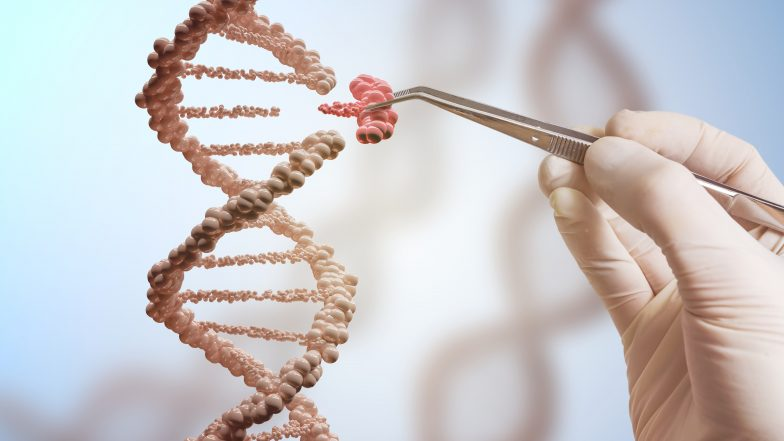
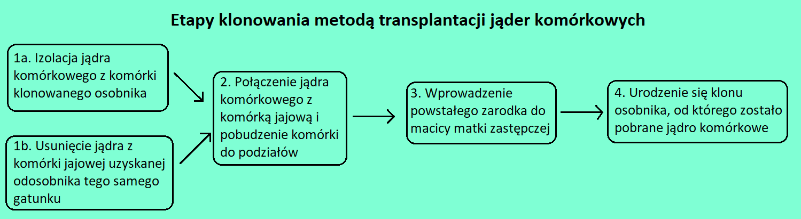
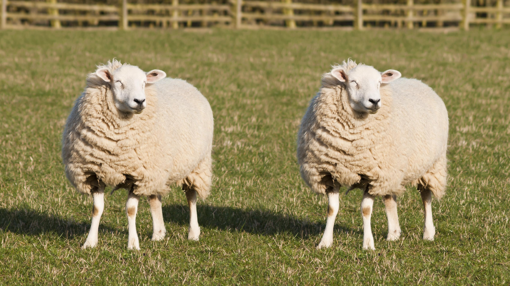

Osiągnięcia biotechnologii molekularnej
Terapia genowa - to metoda leczenia polegająca na wprowadzeniu obcych kwasów nukleinowych do komórek ciała
pacjenta w celu uzyskania określonego efektu terapeutycznego.
Celem terapii genowej może być m.in.:
- Dostarczenie komórkom poprawnej wersji genu
- Wyciszenie aktywności wadliwej wersji genu
- Skierowanie komórek na drogę apoptozy

Klonowanie - to uzyskiwanie genetycznych kopii organizmów, pojedynczych komórek lub cząsteczek DNA.


Poradnictwo genetyczne - to forma profesjonalnej pomocy kierowanej do osób chorych na choroby genetyczne.
Wykorzystywanie komórek macierzystych - są to komórki, które mogą się dzielić i różnicowac w inne typy komórek.
Grzegorz Winsztal 4I